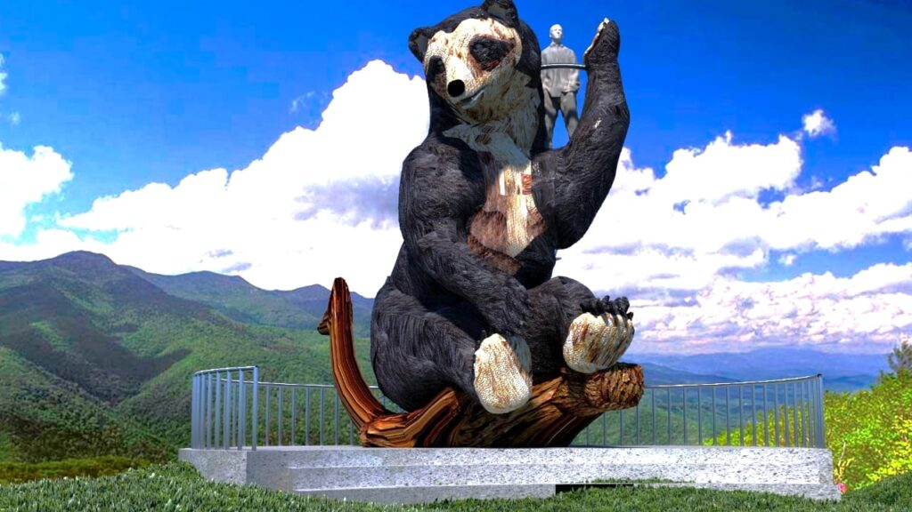
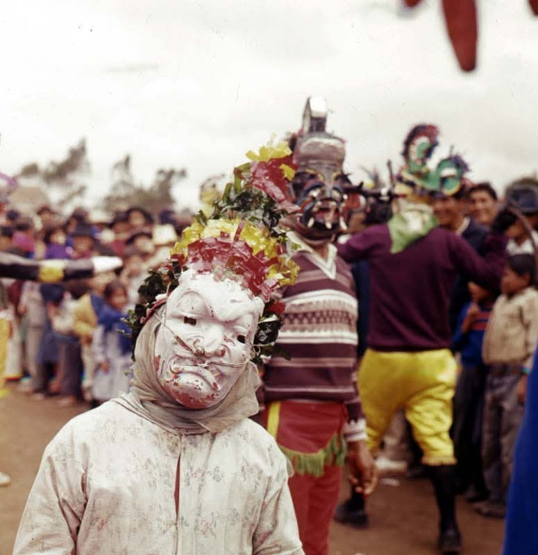
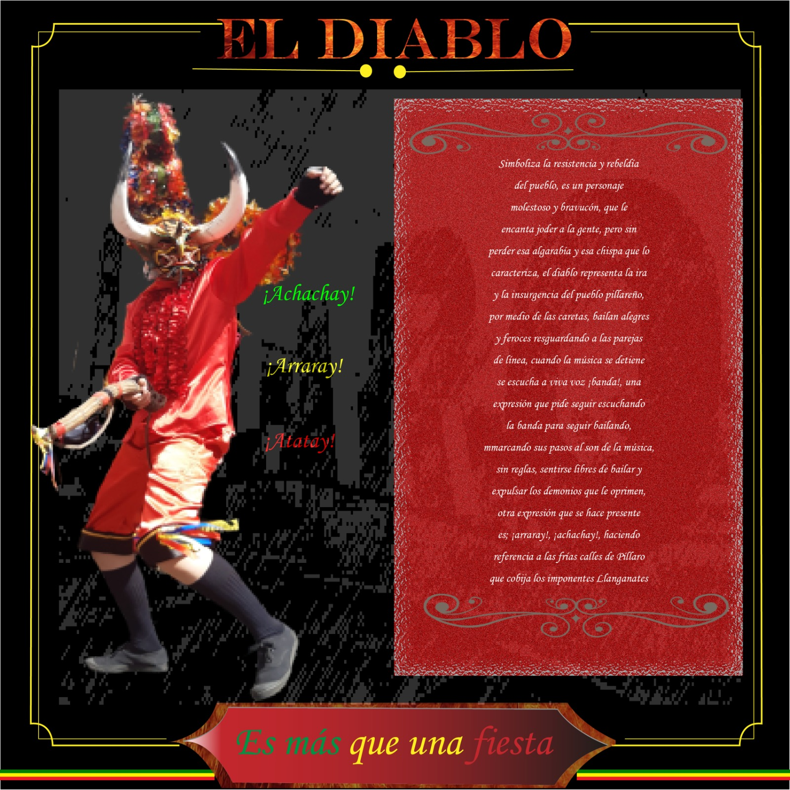
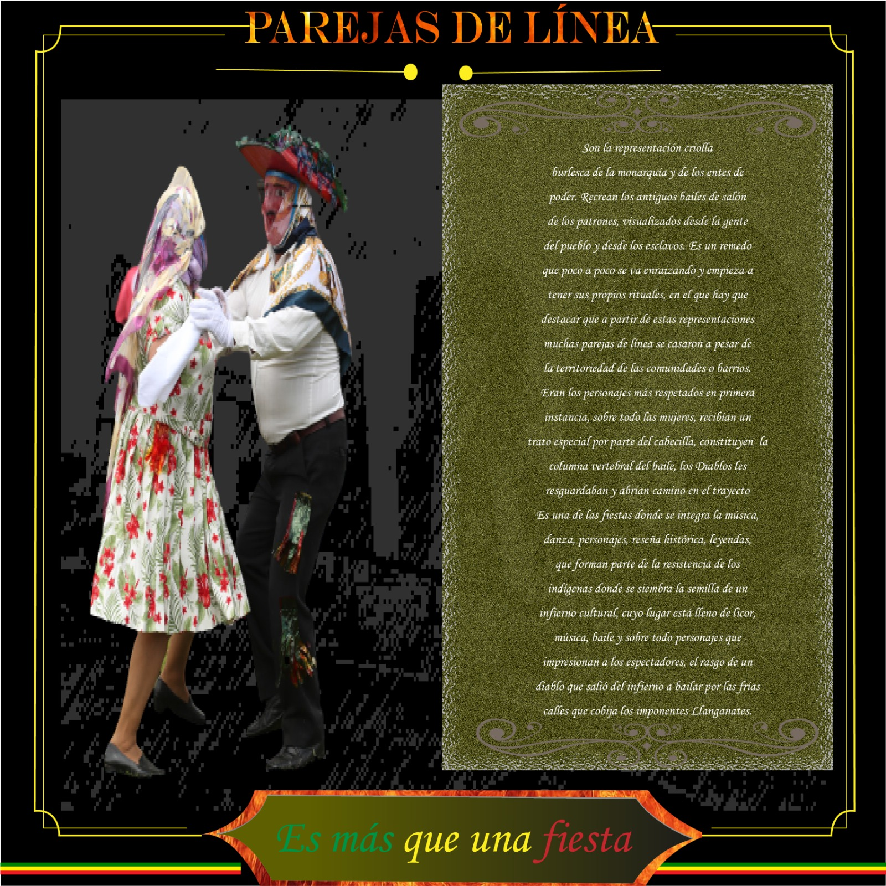
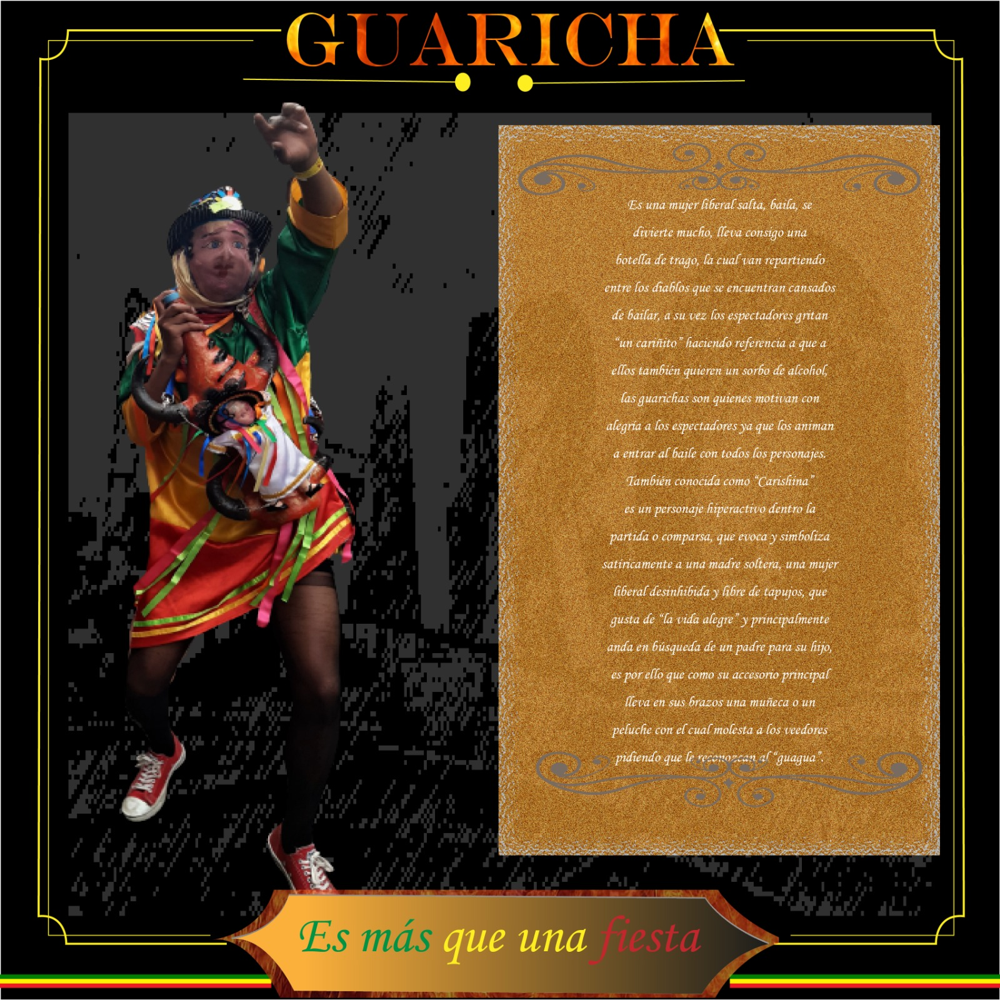
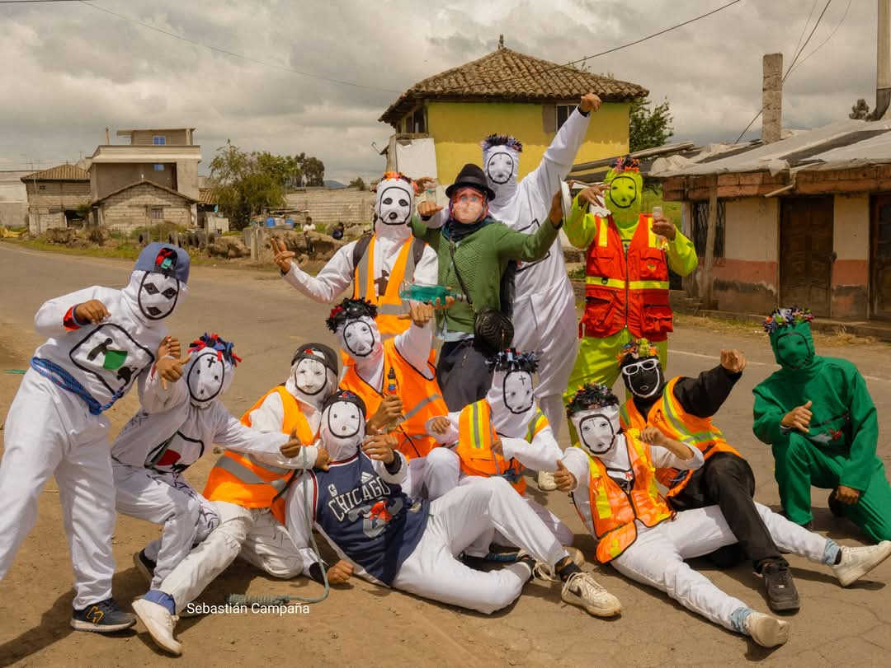
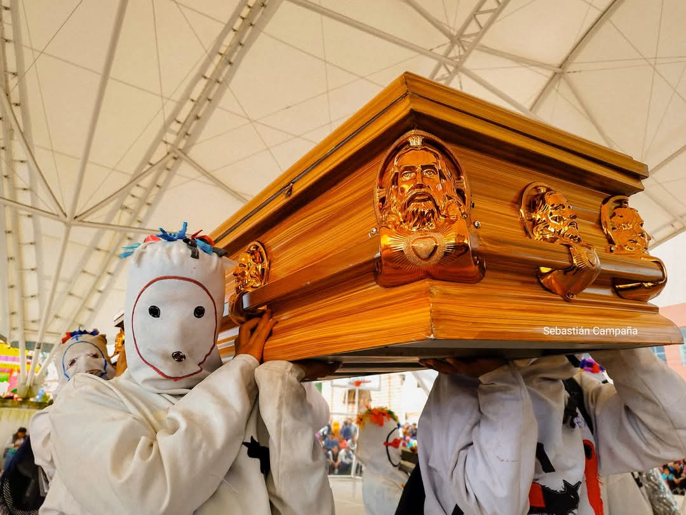
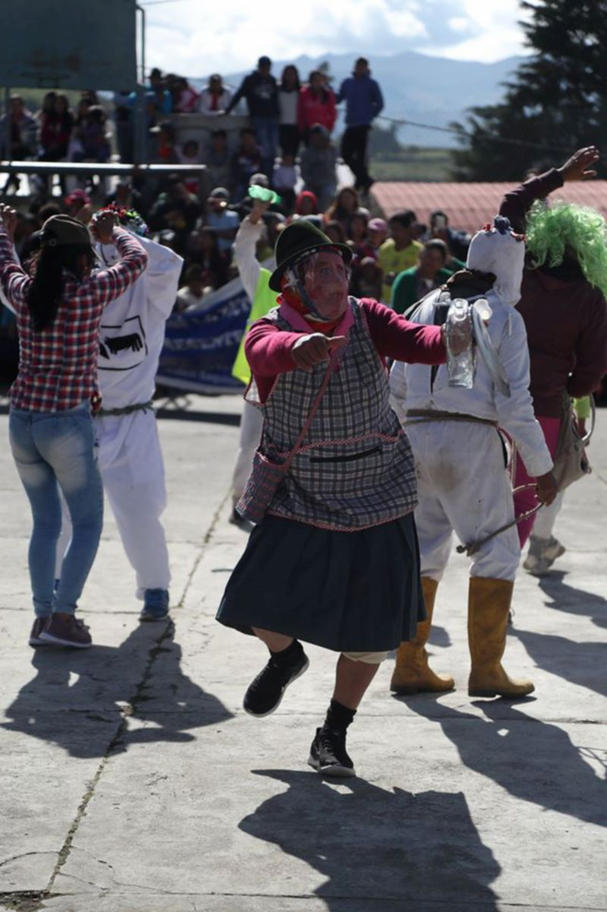
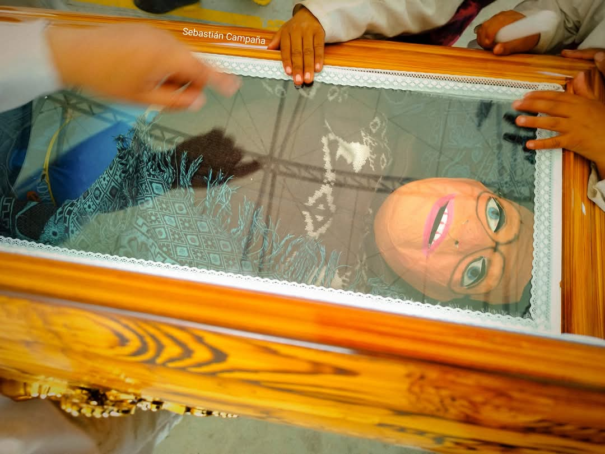

Nosotros
Esta página ha sido creada con el propósito de concientizar a todos sobre la riqueza cultural y la diversidad que Píllaro tiene para ofrecer. Aunque la Diablada Pillareña es una de nuestras celebraciones más conocidas, nuestra tierra es mucho más que esta tradición. En Píllaro, te invitamos a descubrir la riqueza de sus 9 parroquias: 2 urbanas y 7 rurales, cada una con su propio encanto, historia y tradiciones únicas.
- San Andres los monos: Cada 31 de diciembre,esta celebración llena de algarabía despide el año con alegría y color.
- Poalo Trageria: Una representación del Pase del Niño que enriquece nuestras tradiciones navideñas..
- San Miguelito Los guacos: Una práctica ancestral que limpia los males y renueva la vida, conectándonos con nuestras raíces espirituales.
- Pillaro la Diablada Pillareña: Una fiesta que simboliza la rebeldía y la fuerza de nuestro pueblo, un evento que encanta a locales y turistas por igual.
Nosotros, como desarrolladores, tenemos el firme compromiso de garantizar que cada visitante pueda vivir una experiencia inolvidable y que las riquezas culturales de Píllaro sean conocidas y valoradas.
Principales lugares de Píllaro
Parque nacional llanganates
El Parque Nacional Llanganates, desde Píllaro (Tungurahua, Ecuador), es un acceso ideal a este espacio lleno de biodiversidad y misterio. Sus atractivos incluyen la Laguna de Anteojos, los páramos andinos, cascadas escondidas y el mítico Cerro Hermoso. Perfecto para senderismo, fotografía y conectar con la leyenda del tesoro de Atahualpa.
Plaza de la resistencia Rumiñahui
.jpg)
En la parroquia San Miguelito del Cantón Píllaro, provincia de Tungurahua, se encuentra el Cerro de Huaynacuri, lugar donde los historiadores afirman que nació el conquistador incaico Rumiñahui. Hace casi 20 años en este lugar se construyó el mirador “Plaza de Resistencia Indígena”, edificación con la que se intentó rescatar la memoria simbólica del guerrero pillareño.
La garra del oso

El nuevo Monumento al Oso Andino, ubicado en la parroquia de Baquerizo Moreno, al sur de Pillaro, es una reciente iniciativa para rendir homenaje a esta especie emblemática de la región. El monumento está rodeado de una rica biodiversidad, tanto en flora como en fauna, lo que lo convierte en un lugar perfecto para quienes aman la naturaleza. Este proyecto se gestó hace dos años, cuando se reportó la aparición de un oso de anteojos en la zona, lo que alertó a las autoridades locales y del cantón.

Diablada Pillareña
La Diablada Pillareña, una emblemática manifestación cultural de Ecuador, fue declarada Patrimonio Cultural Intangible del país en el año 2009. Esta celebración, originaria del cantón Píllaro, combina danza, música y tradición, destacando por sus coloridas máscaras de diablos. Su importancia radica en mantener vivas las raíces culturales y la identidad de su pueblo.
Su Historia

La diablada se originó cuando los jóvenes del barrio Tunguipamba enamoraban a las chicas de la parroquia Marcos Espinel, por lo que sus moradores, celosos de sus mujeres, decidieron asustar y ahuyentar a los visitantes, adoptando ese disfraz. Esta costumbre se mantuvo con el pasar de los años y se extendió a todas las parroquias aledañas.(Pereira, 2009), la mayoría de jóvenes tenían sus enamoradas en otros barrios donde iban a dar serenatas utilizando la guitarra, la hoja, la bandola y el rondador, pasada las diez de la noche, lo que causó malestar a los moradores, reuniéndose para defender sus intereses, vistiéndose con sábanas blancas, caretas con cachos de venado, comenzaron a bailar y golpear los aciales contra el suelo provocando pánico y susto, y pronunciando palabras de achachay, arrarray, silbidos, gritos, por lo que corrían despavoridos a sus casas.(Campaña Coba, at.al, 2010,p.464)
Personajes
Diablo

Simboliza la resistencia y rebeldía del pueblo, es un personaje molestoso y bravucón, que le encanta joder a la gente, pero sin perder esa algarabía y esa chispa que lo caracteriza, el diablo representa la ira y la insurgencia del pueblo pillareño.
Vestimenta
Viste una blusa con diseños extravagantes en donde predomina el color rojo, un pañuelo de seda que se envuelve en la cabeza, una coronilla colorida en extremo y adornada con papeles brillantes que se distinguen a lo lejos, un pantaloncillo corto que permite la fluidez de sus pasos de baile, medias largas color piel o cualquier otro color que combine con su atuendo, zapatillas de lona un tanto desgastadas, guantes de lana de cualquier color, un acial, fuete o también llamado boyero, como accesorio en sus manos.
Pareja de linea

Las parejas de línea (mujer y hombre) son la columna vertebral de la fiesta, hacen el remedo y representación de los patrones que daban fiestas en las haciendas, son la representación criolla burlesca de la monarquía y de los entes de poder.
Vestimenta
Sus atuendos están constituidos con pañuelos de seda elegantes, en el caso del hombre, con una camisa blanca inocua, guantes color blanco, un pantalón negro o azul oscuro adornado con cintas multicolor o papel celofán brillante, zapatos negros muy bien lustrados, un sombrero de alas anchas dobladas colorido en su totalidad forrado de papel celofán, y su careta de malla con pelo sintético a manera de 30 bigotes para diferenciarlo de su compañera. Del mismo modo la mujer, quién lleva un vestido plisado de cualquier color, guantes blancos, medias nylon o color piel, zapatos de tacón bajo, una corona a manera de turbante y recubierto por otro pañuelo de seda fina que va en concordancia su vestido
Guaricha

Es una mujer liberal salta, baila, se divierte mucho, lleva consigo una botella de trago, la cual van repartiendo entre los diablos que se encuentran cansados de bailar, a su vez los espectadores gritan “un cariñito” haciendo referencia a que a ellos también quieren un sorbo de alcohol, las guarichas son quienes motivan con alegría a los espectadores
Vestimenta
Viste una camisona larga a manera de bata o enterizo adornado con cintas, y lentejuelas brillosas, pañoletas de seda, que cubren su espalda y cabeza, medias color piel, zapatillas o zapatos manchados, un fuete o cabresto, un sombrero de paño de ala media ornamentado con largas cintas de colores vivos, con adornos brillosos que llamen la atención o pequeños espejos, su careta igualmente es a base de malla y esta no tiene ningún distintivo diferenciador de género, ya que puede ser tanto un hombre como una mujer.

los monos de san Andres
Los Monos de San Andrés, también conocidos como Martínez, son una tradición originaria del norte de Píllaro. Con alegría y humor, estos personajes jocosos y sonrientes despiden el año con celebraciones que se realizan del 25 al 31 de diciembre, manteniendo viva una costumbre llena de identidad y folclore.
Su Historia

Los Martínez o Monos son personajes cargados de simbolismo y humor que dan vida a las calles de la parroquia San Andrés, en el cantón Píllaro, durante la última semana del año. Los Monos representan hijos que las familias no pudieron tener, lo cual les otorga un trasfondo emotivo, más allá de lo festivo. Además, su apariencia blanca y su voz pintoresca les confiere un carácter particular que los distingue de otras celebraciones. Al igual que las "locas viudas", estos personajes piden limosnas y animan las calles, lo que refleja un sentido de comunidad y participación colectiva. Los Monos no van solos; siempre están acompañados de una viuda, un detalle que refuerza la teatralidad y el simbolismo de esta festividad. Esta tradición, aunque puede parecer humorística y excéntrica, está profundamente arraigada en las costumbres locales, combinando elementos festivos con significados simbólicos.
Personajes
Mono o martinez
.jpg)
Los Monos o Martínez son personajes alegres y jocosos, conocidos por su peculiar manera de hablar y su espíritu festivo. Representan a los hijos que nunca tuvieron las viudas, y su presencia es un símbolo lleno de tradición y folclore. Siempre se les ve en grupo, ya que nunca viajan solos. Estos personajes suelen recorrer las comunidades, llevando consigo alegría y un toque de misterio, mientras mantienen viva una tradición única que fascina a todos los que tienen la oportunidad de encontrarlos.
Vestimenta
Consiste en un traje blanco que cubre todo su cuerpo de pies a cabeza, acompañado de botas negras, diseñadas para protegerlos del mal tiempo y evitar que se ensucien. Además, llevan una cuerda o mecate atado a la cintura, que completa su llamativo atuendo.
Viuda

La Viuda representa a la esposa del "Viejo" y es una figura central en esta tradición. Siempre va acompañada de los Monos, recorriendo todos los lugares aledaños a la parroquia. Con una voz burlona y, al mismo tiempo, llorosa, invita a las personas a acompañar el velorio y entierro de su supuesto marido. Mientras realiza su recorrido, la Viuda recoge limosnas de los habitantes, simbolizando el esfuerzo y la solidaridad comunitaria. Al finalizar el día, ella se acerca a la casa del "Viejo" para entregar todo lo recolectado, cerrando así su misión con un toque de solemnidad
Vestimenta
la Viuda refleja la imagen tradicional de una mujer de luto: lleva falda, mandil y pantalón, pero su atuendo destaca por un detalle especial, pues siempre está cubierta con una máscara de malla que oculta su rostro. Además, usa un sombrero o una gorra distintiva y lleva consigo una cartera donde guarda la alcancía con las contribuciones que las personas le han dado.
El viejo

El Viejo es el personaje central de la tradición que culmina el 31 de diciembre a las 12 de la noche, cuando es quemado como un acto simbólico para despedir el Año Viejo y dar la bienvenida a nuevos comienzos con la llegada del Año Nuevo. Este personaje representa el cierre de ciclos, el fin de lo viejo y la esperanza por lo que está por venir. Durante el día, el Viejo recorre las calles del pueblo en un carro decorado, acompañado de un tambor y música tradicional que resuena en las comunidades. Su propósito es convocar a las personas a despedirse de él, creando un ambiente festivo y emotivo.
Vestimenta
A diferencia de los otros personajes, el Viejo no tiene una vestimenta característica o fija. En realidad, se trata del prioste elegido para representar al Viejo ese año, quien será cremado como parte del ritual que marca el fin de una etapa y el inicio de otra.